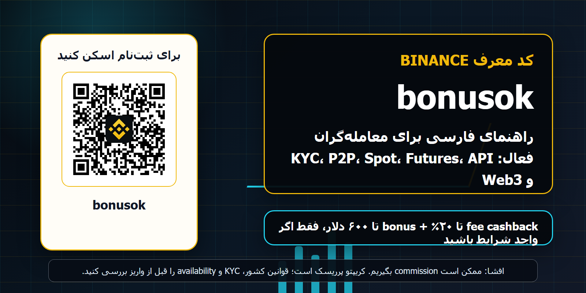
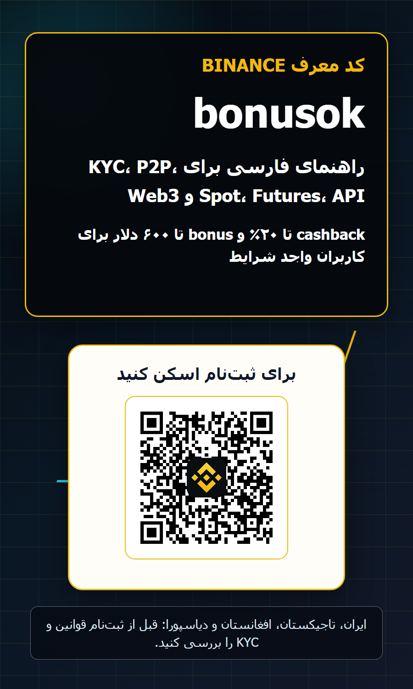
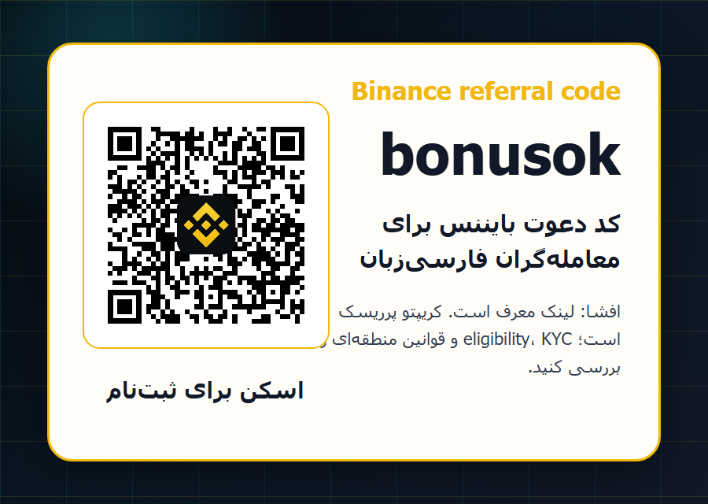

افشا: این صفحه شامل لینک معرف است؛ اگر از طریق آن ثبتنام یا معامله کنید، ممکن است commission دریافت کنیم. رمزارز پرریسک و پرنوسان است. bonus، cashback، KYC، محصول و availability به کشور، حساب و قوانین Binance بستگی دارد.
کد معرف Binance bonusok برای معاملهگران فارسیزبان
راهنمای فارسی کد معرف بایننس bonusok برای کاربران واجد شرایط: بررسی کارمزد، KYC، P2P، Spot، Futures، Margin، Earn، API، Web3، bStocks و چکلیست ریسک برای ایران، تاجیکستان، افغانستان و دیاسپورای فارسیزبان. این متن مشاوره مالی، حقوقی یا مالیاتی نیست و هیچ راهکاری برای دور زدن محدودیتها، تحریمها یا KYC ارائه نمیدهد.


تصویر با چیدمان اندازهگیریشده ساخته شده و QR واقعی bonusok بعد از رندر در فایل نهایی قرار گرفته است.
خلاصه سریع: bonusok چیست و چه کسی باید آن را بررسی کند؟
کد معرف bonusok یک مسیر ثبتنام برای کاربرانی است که میخواهند هنگام باز کردن حساب Binance، referral code یا invite code را از همان ابتدا درست اعمال کنند. وقتی روی لینک یا QR این صفحه کلیک میکنید، مقصد باید accounts.binance.com/register?ref=bonusok باشد. قبل از تکمیل حساب، وجود ref=bonusok را در آدرس بررسی کنید؛ چون بعد از ساخت حساب، تغییر کد معرف معمولاً ساده نیست و ممکن است اصلاً ممکن نباشد.
پیشنهاد را باید مشروط بخوانید، نه تضمینی. در دیتابیس داخلی ما برای Binance، پیشنهاد کاربرمحور شامل fee cashback تا 20 درصد و bonus تا 600 دلار برای کاربران واجد شرایط ثبت شده است، اما eligibility، KYC، کشور، محصول، زمان کمپین، نوع معامله و قوانین Binance نتیجه را تغییر میدهد. این صفحه مشاوره مالی، حقوقی یا مالیاتی نیست؛ یک چکلیست عملی برای معاملهگر فارسیزبان است.
چرا برای فارسیزبانها یک صفحه جدا لازم است؟
کاربر فارسیزبان معمولاً با چند عبارت متفاوت جستوجو میکند: کد معرف بایننس، کد دعوت Binance، referral code Binance، promo code، bonusok، تخفیف کارمزد، ثبتنام بایننس، P2P USDT، فیوچرز بایننس، API بایننس و Web3. اگر صفحه فقط ترجمه مکانیکی باشد، نیت واقعی کاربر را نمیگیرد. این راهنما اصطلاحات فارسی و انگلیسی را کنار هم نگه میدارد تا هم برای خواننده طبیعی باشد و هم برای موتور جستوجو قابل فهم بماند.
بازار فارسیزبان یکدست نیست. ایران با ریسک تحریم و محدودیت منطقهای جدی روبهروست، تاجیکستان طبق فهرست پشتیبانی اپلیکیشن Binance در وضعیت Available دیده میشود، افغانستان در همان فهرست عمومی که امروز بررسی شد دیده نشد و دیاسپورا در ترکیه، امارات، اروپا، کانادا یا کشورهای دیگر باید قوانین محل اقامت خود را جدا بررسی کند. بنابراین پیام اصلی ما eligibility-first است: اول امکان قانونی و KYC، بعد کارمزد و bonus.
هشدار مهم برای ایران: دور زدن محدودیتها توصیه نمیشود
برای کاربران داخل ایران، این صفحه نباید به عنوان دعوت مستقیم به دور زدن محدودیتها خوانده شود. ایران در بسیاری از منابع تحریمی و compliance به عنوان حوزه حساس مطرح است و Binance نیز در منابع رسمی خود روی KYC، ریسک، مسئولیت کاربر و محدودیتهای منطقهای تأکید میکند. استفاده از VPN، مدارک نادرست، آدرس غیرواقعی یا حساب شخص دیگر میتواند به مسدود شدن حساب، توقف برداشت یا مشکلات حقوقی منجر شود.
اگر ایرانی هستید اما در کشور دیگری اقامت قانونی، مدارک واقعی و دسترسی مجاز دارید، باز هم باید شرایط حساب، کشور محل اقامت، KYC، مالیات و قوانین محلی را پیش از هر واریز بررسی کنید. هدف این صفحه جذب معاملهگر باکیفیت است، نه تشویق به false KYC یا رفتار پرریسک. اگر دسترسی شما به محصولی در حساب Binance نمایش داده نمیشود، راه درست آن دور زدن سیستم نیست؛ بررسی گزینههای قانونی و مجاز است.
تاجیکستان، افغانستان و دیاسپورا: چه چیز را جداگانه چک کنیم؟
در فهرست رسمی countries/regions where the Binance App is supported که امروز بررسی شد، Tajikistan با وضعیت Available آمده است. این فقط به معنی پشتیبانی اپلیکیشن است و بهتنهایی تضمین نمیکند که همه محصولات مثل Futures، Margin، Earn، bStocks یا P2P برای هر کاربر تاجیکستانی فعال باشد. هر محصول در Binance میتواند محدودیت کشور، KYC، ریسک یا قوانین جدا داشته باشد.
برای Afghanistan در همان فهرست عمومی، مورد واضحی پیدا نشد، بنابراین در متن صفحه ادعای availability نمیکنیم. برای فارسیزبانان افغانستان و دیاسپورا، مسیر حرفهای این است: کشور محل اقامت، مدارک KYC، روش پرداخت، مالیات، قوانین رمزارز و در دسترس بودن محصول را در خود حساب و منابع رسمی بررسی کنید. اگر پاسخ روشن نیست، قبل از واریز جدی، از پشتیبانی رسمی یا مشاور محلی کمک بگیرید.
چرا این راهنما برای معاملهگر فعال نوشته شده است؟
کاربر تازهکار معمولاً فقط میپرسد bonus چقدر است. معاملهگر فعال سؤالهای دقیقتری دارد: maker/taker fee چقدر روی PnL اثر میگذارد؟ آیا P2P امن است؟ چه زمانی bot را متوقف کنم؟ API key چه permissionهایی باید داشته باشد؟ delisting notice چه بلایی سر سفارشها و ربات میآورد؟ آیا futures در کشور من مجاز است؟ این صفحه برای همین سطح از سؤال نوشته شده است.
برای ما referral باارزش کسی است که بعد از ثبتنام، KYC واقعی، مدیریت ریسک، واریز کوچک آزمایشی، اولین معامله منطقی، و سپس فعالیت 7، 30 و 90 روزه داشته باشد. ثبتنام زیاد اما بدون معامله، یا حسابهایی که به دلیل eligibility مشکل میخورند، کیفیت کمپین را پایین میآورند. به همین دلیل متن پر از هشدار، چکلیست و منابع رسمی است.
جدیدترین خبرهای Binance که در این صفحه استفاده شد
در هفته اول جولای 2026، چند خبر Binance برای معاملهگر فعال مهم بود. Binance اعلام کرد برخی spot trading pairs در تاریخ 2026-07-10 حذف میشوند و برای همان pairs سرویس Spot Trading Bots نیز متوقف میشود. این خبر برای کسی که grid، DCA یا bot دارد مهمتر از یک خبر تبلیغاتی است، چون اگر pair بسته شود و کاربر bot را بهموقع تغییر ندهد، ممکن است ضرر عملیاتی ببیند.
همچنین Binance خبر اضافه شدن bStocks trading pairs، delisting در Margin and Loan برای TST و IOTX، پیشنهادهای Earn و USDC Flexible Products، و تکمیل upgrade مربوط به Prediction Markets را منتشر کرد. اینها نشان میدهد پلتفرم فقط spot ساده نیست؛ یک محیط بزرگ با محصولات متعدد است. همین تنوع برای جذب active trader خوب است، اما فقط وقتی کاربر availability و ریسک هر محصول را جدا بفهمد.
bStocks و Stock Trading: فرصت یا حواسپرتی؟
bStocks برای کاربرانی جذاب است که علاوه بر crypto به exposure سنتیتر مثل سهام و ETF علاقه دارند. خبر اضافه شدن 10 جفت معاملاتی bStocks روی Binance Spot نشان میدهد که بازارهای tokenized securities در تجربه کاربری Binance پررنگتر شدهاند. اما برای مخاطب فارسیزبان، مخصوصاً کسی که در کشور با ابهام حقوقی زندگی میکند، سؤال اول نباید سود احتمالی باشد؛ سؤال اول eligibility و قانون است.
اگر bStocks در حساب شما فعال است، قبل از معامله باید مفهوم underlying exposure، نقدشوندگی، اسپرد، ساعات معاملاتی، custody، corporate actions و محدودیت کشور را بخوانید. اگر فعال نیست، از مسیرهای غیررسمی برای فعالسازی استفاده نکنید. کد bonusok فقط مسیر ثبتنام و احتمال cashback/bonus را پوشش میدهد؛ تصمیم محصول باید بر اساس دانش، قانون و ریسک انجام شود.
Spot removal و delisting: چرا باید برای botها مهم باشد؟
وقتی Binance یک spot pair را حذف میکند، خود token ممکن است هنوز روی pairهای دیگر موجود باشد، اما ربات، سفارش معلق، alert و strategy شما به همان pair خاص وابسته بوده است. در notice مربوط به 2026-07-10، Binance توضیح داد که سرویس Spot Trading Bots برای آن جفتها هم متوقف میشود و اگر کاربر bot را بهموقع cancel یا update نکند، ممکن است ضرر ببیند.
معاملهگر فعال باید یک routine هفتگی داشته باشد: Announcement Center، وضعیت pairها، tick size، minimum notional، funding، margin status و bot status را چک کند. اگر یک استراتژی فقط به دلیل cashback مثبت میشود اما با یک delisting notice از هم میپاشد، آن استراتژی هنوز mature نیست. تخفیف کارمزد جایگزین کنترل عملیاتی نمیشود.
ثبتنام با bonusok: چکلیست مرحلهبهمرحله
اول، فقط از domain رسمی Binance یا لینک referral همین صفحه استفاده کنید. دوم، قبل از وارد کردن ایمیل یا شماره، مطمئن شوید در URL عبارت ref=bonusok باقی مانده است. سوم، اگر QR را اسکن میکنید، مقصد باید accounts.binance.com/register?ref=bonusok باشد. چهارم، رمز عبور مستقل، 2FA app، anti-phishing code و withdrawal whitelist را از همان روز اول فعال کنید.
پنجم، KYC را فقط با مدارک واقعی و متعلق به خودتان انجام دهید. ششم، قبل از واریز بزرگ، یک واریز و برداشت کوچک آزمایشی داشته باشید. هفتم، در قسمت referral یا rewards بررسی کنید که کد درست اعمال شده است. هشتم، اولین معامله را روی Spot و با حجم کوچک انجام دهید. نهم، قبل از Futures، Margin، API یا bot، ریسک و قوانین محصول را جدا بخوانید.
P2P USDT برای فارسیزبانها: کاربردی اما پرریسک
P2P برای بسیاری از کاربران منطقهای راهی عملی برای ورود و خروج به stablecoin است، اما همانقدر که کاربردی است، ریسک عملیاتی دارد. معامله خارج از escrow، گفتوگو در پیامرسان، پرداخت از حساب شخص ثالث، رسید جعلی، chargeback، اختلاف نام صاحب حساب و فشار برای release سریع همگی خطرناک هستند. اگر P2P در حساب شما مجاز و فعال است، فقط داخل چارچوب پلتفرم و با counterparty معتبر کار کنید.
کاربر فارسیزبان باید علاوه بر ریسک طرف مقابل، ریسک بانکی و مالیاتی را هم ببیند. جریانهای متعدد USDT/P2P بدون توضیح قابل دفاع میتواند بعدها سؤال ایجاد کند. order ID، نام طرف مقابل، تاریخ، مبلغ، شبکه انتقال، کارمزد و دلیل تراکنش را نگه دارید. هدف active trading، سرعت بدون سند نیست؛ جریان نقدی قابل توضیح و منظم است.
کارمزد و cashback را چطور حرفهای حساب کنیم؟
اگر فقط ماهی یک بار crypto میخرید، fee cashback ممکن است تفاوت زیادی در نتیجه نهایی ایجاد نکند. اما برای scalper، swing trader پرتعداد، grid bot، market maker کوچک، DCA rebalancer یا API trader، کارمزد maker/taker جمع میشود و روی PnL اثر مستقیم دارد. برای همین کد معرف bonusok برای معاملهگر فعال از نظر اقتصادی جذابتر از کاربر کاملاً منفعل است.
یک جدول ساده بسازید: حجم ماهانه، fee متوسط، spread، slippage، funding، withdrawal fee، هزینه tax/reporting و مقدار cashback احتمالی. اگر strategy بدون cashback منفی است و فقط با cashback مثبت میشود، احتمالاً کیفیت strategy کافی نیست. cashback باید بهینهسازی هزینه باشد، نه ستون اصلی سودآوری.
Futures و Margin: برای همه مناسب نیست
Futures و Margin در Binance برای بسیاری از معاملهگران حرفهای جذاب است، اما leverage یعنی سرعت بیشتر در سود و ضرر. liquidation price، maintenance margin، funding rate، ADL، stop order slippage و ریسک gaps باید قبل از اولین معامله فهمیده شود. اگر یک کاربر هنوز نمیتواند order history و fee history را بخواند، ورود به leverage برای او زود است.
در بسیاری از کشورها محصولات مشتقه محدود یا مشروط هستند. اگر در حساب شما Futures فعال نیست یا هشدار eligibility میبینید، به دنبال دور زدن آن نباشید. برای کاربران ایران و بعضی حوزههای حساس، این هشدار دو برابر مهم است. referral link نباید کسی را به محصولی ببرد که از نظر کشور، KYC یا تجربه برای او نامناسب است.
API و معاملهگر فنی
بخشی از مخاطب فارسیزبان، مخصوصاً در دیاسپورا و جامعه برنامهنویسی، با Python، JavaScript، TradingView webhook، Telegram alert و spreadsheet model کار میکند. Binance API برای چنین کاربری قدرتمند است، ولی API key مثل کارت بانکی است. withdrawal permission را خاموش نگه دارید، IP whitelist را فعال کنید، secret را در GitHub یا bot vendor نگذارید و برای هر strategy یک key جدا بسازید.
قبل از اجرای real-money bot، endpointهای exchangeInfo، rate limit، order precision، lot size، minimum notional، status code و رفتار partial fill را بشناسید. وقتی Binance tick size یا pair status را تغییر میدهد، bot شما باید خطا را درست مدیریت کند. بهترین trader فنی کسی نیست که سریعترین bot را دارد؛ کسی است که failure mode را از قبل نوشته است.
Earn، USDC و سرمایه بیکار
Binance Earn و پیشنهادهای USDC Flexible Products میتواند برای سرمایهای که موقتاً معامله نمیشود جالب باشد. اما APR ثابت و تضمینی نیست و redemption، issuer risk، platform risk، product availability و قوانین کشور اهمیت دارد. در خبرهای 2026-07-08، Binance روی فرصتهای Earn مانور داده، ولی هر محصول Earn باید مثل یک سرمایهگذاری جدا بررسی شود.
معاملهگر فعال سرمایه را بخشبندی میکند: trading float، reserve برای مالیات یا هزینه، stablecoin waiting capital، custody بلندمدت و emergency cash. نگه داشتن همه دارایی در یک پلتفرم راحت است، ولی concentration risk میسازد. bonusok دروازه ورود است؛ مدیریت سرمایه دلیل ماندگاری حساب است.
Web3 و Prediction Markets
Binance Wallet، Web3 API و Prediction Markets برای کاربر پیشرفته جذاباند، اما ریسک آنها با Spot متفاوت است. seed phrase، dApp approval، bridge، smart contract، phishing و permissionهای wallet میتوانند باعث از دست رفتن دارایی شوند. اگر از Web3 استفاده میکنید، یک wallet جدا، سرمایه کم، revoke منظم approvalها و بررسی URL ضروری است.
Prediction Markets یا محصولات احتمالی مشابه ممکن است در کشورها و حسابهای مختلف در دسترس نباشد. حتی اگر Announcement Center خبر upgrade یا completion بدهد، معنی آن این نیست که شما مجاز به استفاده هستید. قبل از هر کلیک، سه سؤال بپرسید: آیا در کشور من مجاز است؟ آیا در حساب من فعال است؟ آیا ریسک مالی و حقوقی آن را فهمیدهام؟
امنیت حساب قبل از هر bonus
هیچ bonus یا cashback ارزش از دست دادن حساب را ندارد. password manager، 2FA app، anti-phishing code، withdrawal whitelist، device review، ایمیل امن و محافظت از SIM-swap را جدی بگیرید. هیچ پشتیبان واقعی Binance از شما OTP، password، seed phrase یا API secret نمیخواهد. هر لینک تخفیف یا airdrop که شما را عجله میدهد، مشکوک است.
کاربر فعال معمولاً در گروههای Telegram، X و Discord هم حضور دارد؛ همین حضور او را هدف phishing میکند. از انتشار screenshot موجودی، PnL، order ID و اطلاعات شخصی خودداری کنید. اگر از bot third-party استفاده میکنید، permission را حداقلی نگه دارید و دارایی زیاد را روی key آزمایشی قرار ندهید.
مالیات، گزارش و سابقه معاملات
این صفحه مشاوره مالیاتی نیست، اما record keeping برای معاملهگر فعال ضروری است. تاریخ، asset، side، quantity، price، fee، funding، شبکه انتقال، deposit source، withdrawal destination، P2P order ID و توضیح strategy را نگه دارید. اگر در تاجیکستان، افغانستان، ترکیه، امارات، اروپا یا کشور دیگری اقامت دارید، قوانین همان کشور اهمیت دارد.
برای کاربران ایرانی یا کسانی که با مدارک اقامت خارجی کار میکنند، ریسک compliance حساستر است. بهتر است همه تراکنشها قابل توضیح باشد و از حساب، کارت یا مدارک شخص دیگر استفاده نشود. اگر حجم معاملات شما بالا میرود، از مشاور محلی کمک بگیرید. فعال بودن در crypto به معنای بینیازی از سند و گزارش نیست.
چگونه بفهمیم کد اعمال شده است؟
بعد از ساخت حساب، داخل بخش rewards، referral، user center یا fee/rebate history بررسی کنید که referral attribution ثبت شده است. اگر چیزی نمایش داده نشد، قبل از واریز جدی با support رسمی صحبت کنید. screenshot از URL ثبتنام، زمان ثبتنام و کد bonusok را نگه دارید. اگر حساب قبلاً ساخته شده، ممکن است کد جدید اعمال نشود.
اگر از QR استفاده میکنید، کد روی تصویر باید واضح و قابل اسکن باشد. ما QR را با ابزار محلی decode کردهایم و در تصویر نهایی هم مقصد را بررسی میکنیم. با این حال، شما هم بعد از اسکن، قبل از وارد کردن اطلاعات، URL را ببینید. phishing معمولاً از همین لحظههای عجله استفاده میکند.
چه کسی نباید از این مسیر استفاده کند؟
اگر کشور، مدارک، سن، وضعیت مالی یا تجربه شما با قوانین Binance یا قوانین محلی سازگار نیست، ثبتنام نکنید. اگر فقط به امید bonus میخواهید پول قرض بگیرید یا leverage بالا بزنید، این مسیر مناسب شما نیست. اگر نمیتوانید ضرر معامله را بپذیرید، ابتدا آموزش، حساب کوچک آزمایشی و مدیریت ریسک را جدی بگیرید.
اگر داخل ایران هستید و دسترسی شما با تحریم یا محدودیت منطقهای مشکل دارد، این صفحه راهنمای bypass نیست. ما به false KYC، VPN برای مخفیکردن محل، حساب اجارهای یا معامله از طرف شخص دیگر توصیه نمیکنیم. referral سالم باید long-term بماند؛ حسابی که از روز اول روی دور زدن ساخته شود، برای کاربر و کمپین خطر دارد.
برنامه 30 روز اول برای معاملهگر فعال
روزهای 1 تا 3: eligibility، KYC، امنیت حساب و referral attribution را بررسی کنید. روزهای 4 تا 7: واریز و برداشت کوچک، خواندن fee schedule و اولین Spot order با حجم کم. روزهای 8 تا 14: export history، تنظیم watchlist، بررسی P2P فقط اگر مجاز و لازم است، و ساخت ژورنال معامله. روزهای 15 تا 21: تست strategy با حجم محدود و بدون leverage بالا.
روزهای 22 تا 30: اگر تجربه و availability اجازه میدهد، bot یا API را فقط با سرمایه کوچک و permission محدود تست کنید. هر هفته Announcement Center را بخوانید، مخصوصاً delisting، tick size، margin و bot notices. اگر در پایان ماه هنوز فقط به bonus فکر میکنید، احتمالاً هنوز آماده active trading نیستید. هدف، ساختن عادت پایدار است.
نتیجهگیری: bonusok را مثل ابزار ورود ببینید، نه وعده سود
کد معرف bonusok میتواند برای کاربر واجد شرایط، مسیر ثبتنام و کاهش بخشی از کارمزدها را بهتر کند. اما ارزش اصلی برای active trader از ترکیب چند عامل میآید: liquidity، امنیت، اجرای منظم، مدیریت کارمزد، شناخت محصولات، خواندن Announcement Center، KYC درست، گزارشپذیری و پرهیز از دور زدن محدودیتها.
اگر پس از بررسی کشور، KYC، ریسک، محصول و قوانین محلی همچنان Binance برای شما مناسب است، لینک همین صفحه و QR واقعی شما را به مسیر ثبتنام bonusok میبرد. اگر نه، بهترین تصمیم ممکن است صبر کردن، آموزش بیشتر یا انتخاب گزینه قانونی دیگر باشد. معاملهگر ثروتمند فقط سریع وارد نمیشود؛ درست و قابل دفاع وارد میشود.

منابع بررسیشده
- Binance support-region list
- Binance Terms and Risk Warning
- Binance Announcement Center
- Notice of Removal of Spot Trading Pairs - 2026-07-10
- Binance Exchange adds 10 bStocks trading pairs
- Binance Margin and Loan delists TST and IOTX
- Binance Earn Yield Arena 2026-07-08
- Binance USDC Flexible Products 2026-07-08
- Binance Wallet Prediction Markets upgrade completed
- Binance Wallet Web3 API
Risk warning: قیمت داراییهای دیجیتال میتواند شدیداً نوسان کند. بیشتر از توان تحمل ضرر معامله نکنید. از false KYC، VPN برای مخفی کردن موقعیت، حساب اجارهای یا دسترسی غیرمجاز استفاده نکنید. پیش از استفاده از Binance، قوانین کشور، شرایط حساب و محصول را بررسی کنید.